Schede didattiche Storia e società
2414 schede didattiche in italiano sul tema «Storia e società»: testo con spazi vuoti, comprensione all'ascolto e crucipuzzle, da stampare (PDF) con soluzioni.
2.414 materiali
Classe
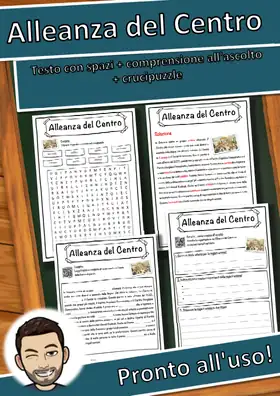
Alleanza del Centro – Scheda didattica classe quarta e quinta: testo con spazi vuoti e crucipuzzle
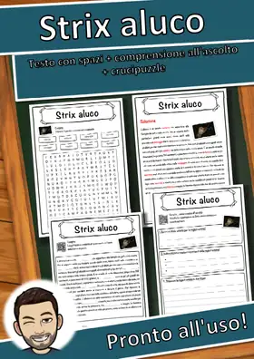
Strix aluco – Scheda didattica classe quarta e quinta: testo con spazi vuoti e crucipuzzle
Solanum lycopersicum – Scheda didattica classe quarta e quinta: testo con spazi vuoti e crucipuzzle
Salix caprea – Scheda didattica classe quarta e quinta: testo con spazi vuoti e crucipuzzle
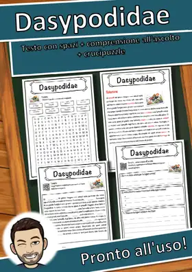
Dasypodidae – Scheda didattica classe quarta e quinta: testo con spazi vuoti e crucipuzzle
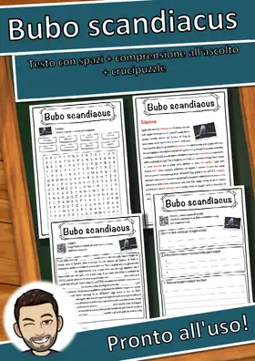
Bubo scandiacus – Scheda didattica classe quarta e quinta: testo con spazi vuoti e crucipuzzle
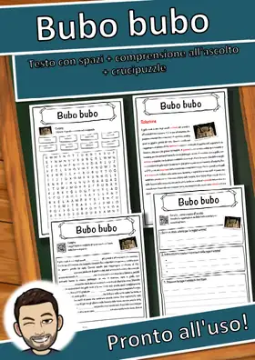
Bubo bubo – Scheda didattica classe quarta e quinta: testo con spazi vuoti e crucipuzzle
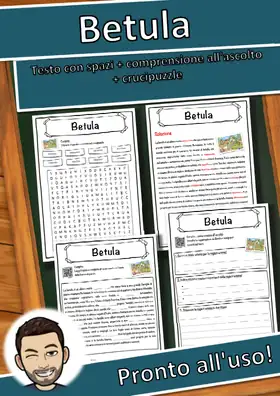
Betula – Scheda didattica classe quarta e quinta: testo con spazi vuoti e crucipuzzle
Estia – Scheda didattica classe quarta e quinta: testo con spazi vuoti e crucipuzzle
Ermes – Scheda didattica classe quarta e quinta: testo con spazi vuoti e crucipuzzle
Efesto – Scheda didattica classe quarta e quinta: testo con spazi vuoti e crucipuzzle
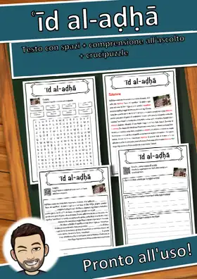
ʿīd al-aḍḥā – Scheda didattica classe quarta e quinta: testo con spazi vuoti e crucipuzzle
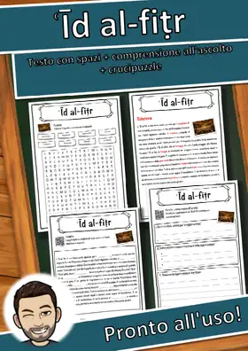
ʿĪd al-fiṭr – Scheda didattica classe quarta e quinta: testo con spazi vuoti e crucipuzzle
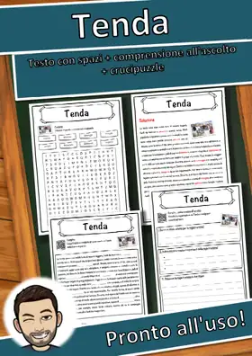
Tenda – Scheda didattica classe quarta e quinta: testo con spazi vuoti e crucipuzzle
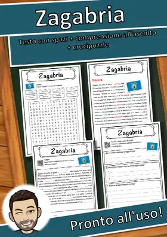
Zagabria – Scheda didattica classe quarta e quinta: testo con spazi vuoti e crucipuzzle
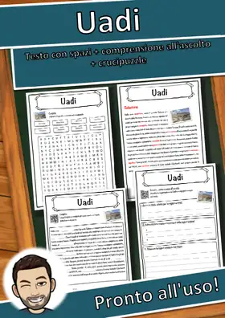
Uadi – Scheda didattica classe quarta e quinta: testo con spazi vuoti e crucipuzzle
Tubercolosi – Scheda didattica classe quarta e quinta: testo con spazi vuoti e crucipuzzle
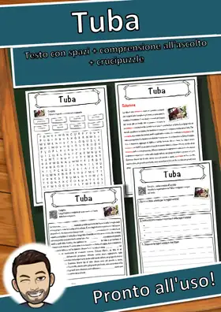
Tuba – Scheda didattica classe quarta e quinta: testo con spazi vuoti e crucipuzzle
Trasporto a fune – Scheda didattica classe quarta e quinta: testo con spazi vuoti e crucipuzzle
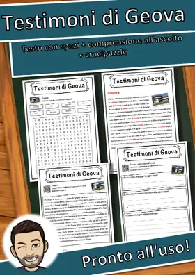
Testimoni di Geova – Scheda didattica classe quarta e quinta: testo con spazi vuoti e crucipuzzle
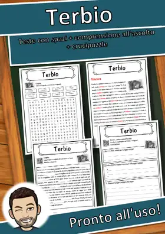
Terbio – Scheda didattica classe quarta e quinta: testo con spazi vuoti e crucipuzzle
Teoria del complotto – Scheda didattica classe quarta e quinta: testo con spazi vuoti e crucipuzzle
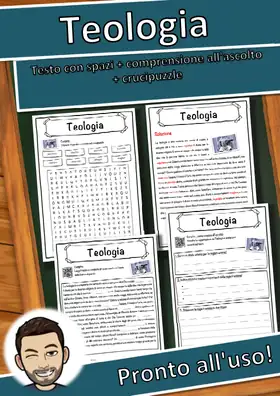
Teologia – Scheda didattica classe quarta e quinta: testo con spazi vuoti e crucipuzzle
Tennesso – Scheda didattica classe quarta e quinta: testo con spazi vuoti e crucipuzzle
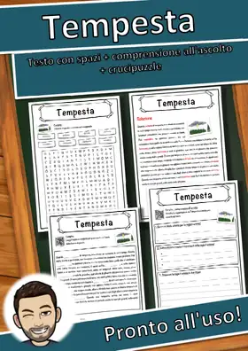
Tempesta – Scheda didattica classe quarta e quinta: testo con spazi vuoti e crucipuzzle
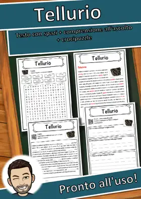
Tellurio – Scheda didattica classe quarta e quinta: testo con spazi vuoti e crucipuzzle
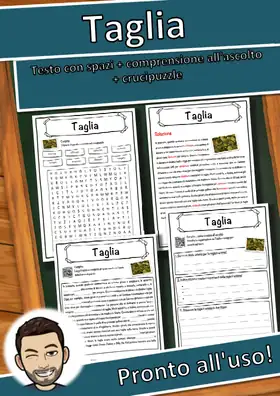
Taglia – Scheda didattica classe quarta e quinta: testo con spazi vuoti e crucipuzzle
Stato di diritto – Scheda didattica classe quarta e quinta: testo con spazi vuoti e crucipuzzle
Stato – Scheda didattica classe quarta e quinta: testo con spazi vuoti e crucipuzzle
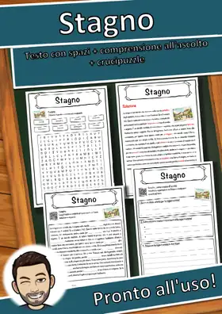
Stagno – Scheda didattica classe quarta e quinta: testo con spazi vuoti e crucipuzzle
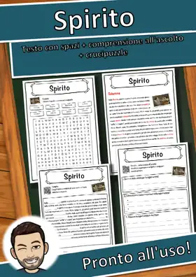
Spirito – Scheda didattica classe quarta e quinta: testo con spazi vuoti e crucipuzzle
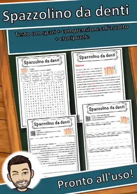
Spazzolino da denti – Scheda didattica classe quarta e quinta: testo con spazi vuoti e crucipuzzle
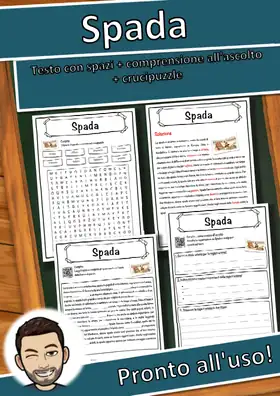
Spada – Scheda didattica classe quarta e quinta: testo con spazi vuoti e crucipuzzle
Solidarietà – Scheda didattica classe quarta e quinta: testo con spazi vuoti e crucipuzzle
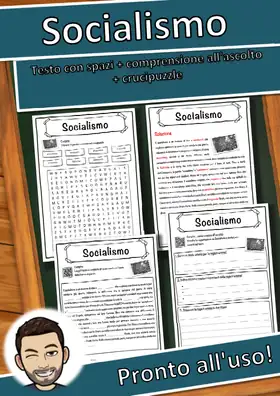
Socialismo – Scheda didattica classe quarta e quinta: testo con spazi vuoti e crucipuzzle
Scheletro – Scheda didattica classe quarta e quinta: testo con spazi vuoti e crucipuzzle
Skateboard – Scheda didattica classe quarta e quinta: testo con spazi vuoti e crucipuzzle
Sistema di scrittura – Scheda didattica classe quarta e quinta: testo con spazi vuoti e crucipuzzle
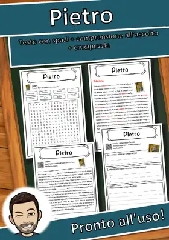
Pietro – Scheda didattica classe quarta e quinta: testo con spazi vuoti e crucipuzzle
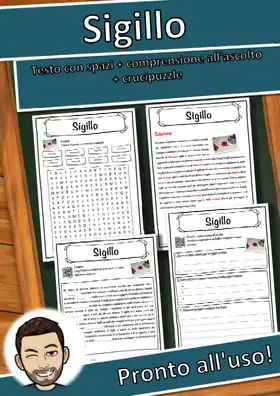
Sigillo – Scheda didattica classe quarta e quinta: testo con spazi vuoti e crucipuzzle
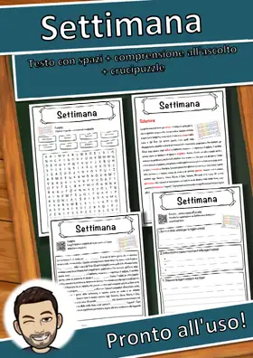
Settimana – Scheda didattica classe quarta e quinta: testo con spazi vuoti e crucipuzzle
Seta – Scheda didattica classe quarta e quinta: testo con spazi vuoti e crucipuzzle
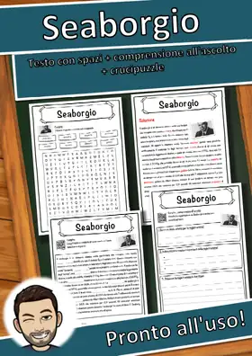
Seaborgio – Scheda didattica classe quarta e quinta: testo con spazi vuoti e crucipuzzle
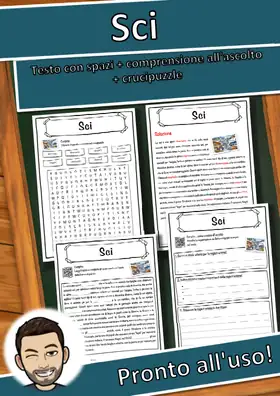
Sci – Scheda didattica classe quarta e quinta: testo con spazi vuoti e crucipuzzle
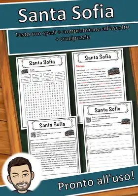
Santa Sofia – Scheda didattica classe quarta e quinta: testo con spazi vuoti e crucipuzzle
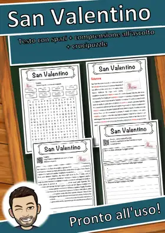
San Valentino – Scheda didattica classe quarta e quinta: testo con spazi vuoti e crucipuzzle
San Pietroburgo – Scheda didattica classe quarta e quinta: testo con spazi vuoti e crucipuzzle
Salto con gli sci – Scheda didattica classe quarta e quinta: testo con spazi vuoti e crucipuzzle
Nessun materiale trovato: prova con un'altra parola o un altro filtro.